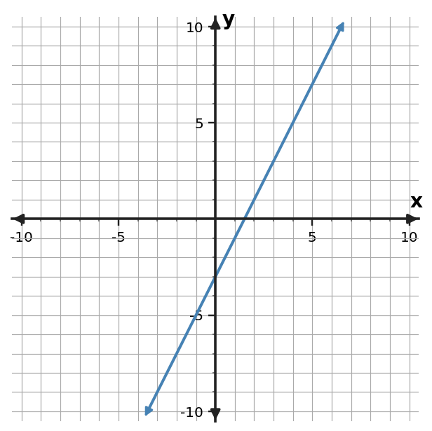

Algebra Practice 2.1 :::: Set 2
1. Find the slope of the line through $(-2,6)$ and $(4,0)$.
2. Find the slope of the line through $(-5,4)$ and $(-1,-4)$.
3. Find the slope of the line through $(-3,-6)$ and $(3,6)$.
4. Use the table to determine the constant rate of change in $y$ per 1 unit of $x$.
| $x$ | $y$ |
|---|---|
| $0$ | $7$ |
| $2$ | $6$ |
| $4$ | $5$ |
| $6$ | $4$ |
5. Use the table to determine the constant rate of change in $y$ per 1 unit of $x$.
| $x$ | $y$ |
|---|---|
| $0$ | $4$ |
| $2$ | $9$ |
| $4$ | $14$ |
| $6$ | $19$ |
6. Use the table to determine the constant rate of change in $y$ per 1 unit of $x$.
| $x$ | $y$ |
|---|---|
| $0$ | $2$ |
| $2$ | $4$ |
| $4$ | $6$ |
| $6$ | $8$ |
7. Determine the slope of the line shown. Use two grid points to support your calculation.

8. Determine the slope of the line shown. Use two grid points to support your calculation.

9. Determine the slope of the line shown. Use two grid points to support your calculation.

10. A tank loses 24 liters in 8 minutes. What is the constant rate in liters per minute?
11. An account increases by 36 dollars over 4 weeks. What is the constant rate in dollars per week?
12. A machine produces 80 parts in 4 minutes. What is the constant rate in parts per minute?
13. Classify the slope of a line that rises from left to right.
14. Classify the slope of a line that is horizontal.
15. Classify the slope of the vertical line $x=-2$.
16. A horizontal line through $y=7$ is said to have undefined slope. Decide whether the stated slope type is correct.
17. A water level drops 8 cm in 4 minutes. Mia reports a slope of +2 cm/min. Correct the sign of the reported rate.
18. A line through $(2,3)$ and $(6,11)$ is reported to have slope $-2$. Check the calculation and correct the sign if needed.
19. The rule is $y=\frac{1}{2}x+4$. Complete the input-output values and name one ordered pair generated by the rule.
| Input $x$ | Output $y$ |
|---|---|
| $-1$ | $\frac{7}{2}$ |
| $0$ | $4$ |
| $2$ | $5$ |
20. The rule is $y=2x+3$. Complete the input-output values and name one ordered pair generated by the rule.
| Input $x$ | Output $y$ |
|---|---|
| $-1$ | $1$ |
| $0$ | $3$ |
| $2$ | $7$ |
21. The rule is $y=-x+5$. Complete the input-output values and name one ordered pair generated by the rule.
| Input $x$ | Output $y$ |
|---|---|
| $-1$ | $6$ |
| $0$ | $5$ |
| $2$ | $3$ |
22. Determine whether the table shows a constant rate of change. If it does, state the rate.
| $x$ | $y$ |
|---|---|
| $0$ | $1$ |
| $2$ | $5$ |
| $4$ | $9$ |
| $6$ | $13$ |
23. Determine whether the table shows a constant rate of change. If it does, state the rate.
| $x$ | $y$ |
|---|---|
| $0$ | $2$ |
| $1$ | $5$ |
| $2$ | $9$ |
| $3$ | $14$ |
24. Determine whether the table shows a constant rate of change. If it does, state the rate.
| $x$ | $y$ |
|---|---|
| $1$ | $10$ |
| $3$ | $6$ |
| $5$ | $2$ |
| $7$ | $-2$ |